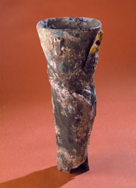

Протезирование, с каких пор оно существует?
Первые протезы упоминаются в священной индийской книге под названием "Висфала", которая представляет собой женщину с железным протезом.

Протезы до 1900 года
Ногу Капуи
Капуйская нога - это протез 3-го века до н.э., обнаруженный в 1885 году в гробнице в Капуе, Италия. Это один из старейших известных протезов. Оригинал был уничтожен в результате воздушного налета во время Второй мировой войны, а копия хранится в Музее науки в Лондоне. Объект выполнен из дерева и покрыт бронзой. Его полезность была бы более эстетичной, чем функциональной.
Амбруаз Рай и пятнадцатый век

Амбруаз Рай является одним из величайших практиков Ренессанса, настолько великим, что его называли отцом современной хирургии. Он будет хирургом принцев и королей, Анри II и его потомков: Франсуа II, Карл IX и Анри III. Его девизом было: "Трудовой импровизатор omnia vincit". ("Тяжелая работа делает все стоящим")
Амбруаз Рай был разработан в пороховую эпоху (которая вызывала все больше и больше ампутаций) сложными и механизированными протезами, предназначенными для самых богатых.
Гражданская война и анестезия
Во время Гражданской войны в мире протезов был достигнут большой прогресс, так как анестезия позволяла дольше и менее болезненно оперировать пациента.
Протезирование после 1900 года
В 1922 году протезы тазобедренного сустава
В 1950 году было представлено изобретение бесшовной резиновой ножки.
Ступенька SACH изобретена в США. Это резиновая ножка без шарнира. Он очень устойчив, но особенно подходит для людей с небольшой активностью.
В 1960 году изобретение шарнирного колена
В 1960 году в Англии английский хирург Джон Чарнли установил первый тотальный протез колена.

В 1970 году было изобретено гидравлическое колено
Она имеет свойство выдвигать ногу вперед с помощью гидравлического цилиндра, т.е. цилиндра, в котором содержится жидкость, приводимая в движение клапанами. Гидравлический блок помогает сделать движение ноги более естественным.
В 1974 году Миттельмайер изобрел керамический протез тазобедренного сустава.
Он берет на себя функцию сустава, ножка вставляется в бедренную кость, а голова и чашка служат подвижности сустава.
В 1997 году протезирование и микропроцессоры - это
В 1997 году был внедрен протез ноги с микропроцессорным управлением. Он оснащен датчиками и его движения регулируются в режиме реального времени. В его текущей версии разрешены такие действия, как езда на велосипеде.
В 1998 году был побит олимпийский рекорд
Спортсмен-инвалид с ампутированными обеими ногами бьет олимпийский рекорд.
В 2005 году бионическая рука
Наши правила и условия использования
Мы гарантируем, что этот сайт не стремится отслеживать вас и ваши личные данные для того, чтобы перепродать их тем, кто предложит наибольшую цену.
Кто мы?
Мы являемся четырьмя студентами DUT по информатике в IUT Ланьона и решили создать сайт, представляющий различные существующие протезы. Этот сайт пытается ответить на следующую проблему: Как компьютерная наука революционизирует производство протезов?
Контакты